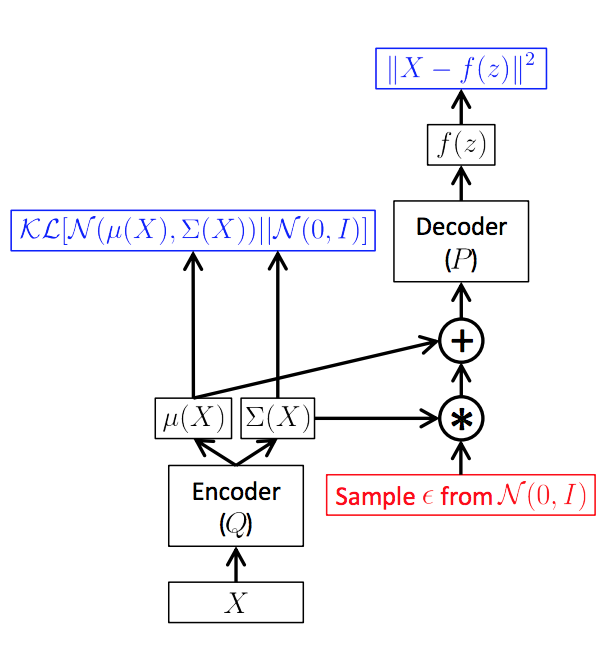

Variational autoencoders (VAEs) have become an extremely popular generative model in deep learning. While VAE outputs don't achieve the same level of prettiness that GANs do, they are theoretically well-motivated by probability theory and Bayes' rule.
However, when deep learning papers discuss VAEs, they totally ignore the Bayesian framework and emphasize the encoder-decoder architecture, despite the fact that the original paper (Kingma 2013) was literally called "Stochastic Gradient Variational Bayes".
In this post, we'll highlight the differences between the deep learning and Bayesian interpretations.
Background
First, a review of VAEs. We have some data $x_1, \ldots, x_n$ that we want to model with a generative process. We assume a latent variable $z_i$ for each $x_i$, and a joint probability distribution $p(x, z) = p(x|z)p(z)$ that the data come from.
In deep learning, we usually assume that $p(z)$ is some simple distribution, e.g. a standard multivariate Gaussian $\mcN(0,1)$, and that $p(x|z)$ comes from a complicated neural network, $x = f_\theta(z)$ (this will be the decoder). To generate a data sample, all we need to do is get a Gaussian sample $z$ (easy) and apply $f_\theta(z)$ to get $x$.
In some sense, $z$ is a code for $x$, so motivated by autoencoders, we want a function $g_\phi$ (the encoder, also a neural network with parameters $\phi$) that encodes $x$. Since we're working with probabilities here, instead of mapping to a single $z$, we map to a distribution - in this case, we'll assume another Gaussian $\mcN(\mu, \sigma^2)$ is the "posterior" distribution on $z$. Now, if we ever want to know the latent code for a data point $x$, we get $\mu, \sigma = g_\phi(x)$, and take samples $z \sim \mcN(\mu, \sigma^2)$. We can think of $g_\phi$ as representing the approximate posterior distribution $q(z|x)$.
To train the generative model (i.e. get $\theta$), we maximize the data log-likelihood $\log p(x)$. It turns out that doing this directly is hard, but by Jensen's inequality, we can get a useful lower bound:
$$ \begin{align} \log p(x) &\geq \E_{z \sim q_\phi(z|x)} [ \log p(x, z) - \log q_\phi(z|x) ] \ &= \E_{z \sim q}[\log p_\theta(x|z)] - KL(q_\phi(z|x) || p(z)) \end{align} $$
This expression is known as the evidence lower bound (ELBO), and will be our loss function $\mcL_{ELBO}$ to optimize. Specifically, we will be doing gradient descent on both $\phi$ and $\theta$, the encoder and decoder respectively, to obtain our generative model. (Expectations are generally estimated via one Monte Carlo sample, or closed form if available.1)

As in the above picture (from this great tutorial), here is how the deep learning computation graph unfolds: given $x$, we encode $\mu, \sigma = g_\phi(x)$, then take a sample $z \sim q(z|x) = \mcN(\mu, \sigma^2)$ (the sample handles the $\E_q$ in the first term of the ELBO). Then, we decode $x = f_\theta(z)$ so that we can compute $\log p_\theta(x|z)$ for our loss.
The deep learning perspective
From a deep learning point of view, we have set up an autoencoder. We map our $x$ to a latent space of $z$ (encoding), then map it back out to the data space (decoding).
Let's break down the ELBO objective. We wish to maximize a sum of two terms: 1. First is $\E_{z \sim q}[\log p_\theta(x|z)]$, commonly known as the reconstruction error. By encoding $x$ to the latent space, sampling a $z$, then decoding back to $x'$ in the expectation, we can see how good our reconstruction is. Of course, we want our reconstructed $x'$ to be as close to our input $x$ as possible. 2. The second term is the negative KL divergence, which computes a sense of distance from our encoding distribution $q_\phi(z|x)$ to $p(z)$. If we only had the first term, the encoding process could be pretty much arbitrary, but this term helps us "regularize" towards some simple distribution $p(z)$ by minimizing the KL. Of course, we don't want it to collapse to 0, otherwise our encoding $q(z|x)$ is meaningless and fails to capture anything informative about our data $x$.
From this perspective, we see that variational autoencoders are like an upgrade of standard autoencoders, which seek to minimize reconstruction loss upon encoding and decoding.
The Bayesian perspective
We saw where the "autoencoder" part of VAE comes from. But what about the "variational" part? Let's rephrase everything we've covered so far in the language of Bayes.
In Bayesian learning, if we have observed variables $x$ and latent $z$, obtaining the posterior $p(z|x)$ is often hard. One method is variational inference, where we approximate the posterior $p(z|x)$ from a family of well-behaved distributions $q(z|x)$. Variational inference seeks to minimize the KL divergence $KL(q(z|x) || p(z|x))$ of our guess $q$ from the true posterior.
VAEs are really doing variational inference. Let's see how:
- $p(z)$ is the prior. In our case, this is a simple Gaussian.
- $p(x|z)$ is the likelihood. In our case, this is implicitly defined by a complicated neural network.
- $p(z|x)$ is the true posterior that we don't know.
- $q(z|x)$ is the variational posterior, also defined a complicated neural network. We usually call this the inference network.
In typical variational inference, both the likelihood $p(x|z)$ and variational posterior $q$ come from simple exponential families, so that we can derive closed form expressions for the parameters. In VAEs, however, both the likelihood and inference net are intractable (defined by neural networks). Fortunately, we can get around this issue with stochastic gradient descent on the ELBO.
Therefore, in a Bayesian sense, VAEs are using variational inference to handle our complicated generative model. The way we do inference on $z$ happens to be by using a neural network, since inference with a neural likelihood is intractable. Note that this interpretation gives us some flexibility: we can change up our prior $p(z)$, likelihood $p(x|z)$, or even variational posterior $q(z|x)$ and still be doing variational inference in the correct sense.
Amortized Inference
There is an interesting point to make about our inference net $q(z|x)$. It performs what is known as amortized inference; amortized in the sense that for different $x_n$, the same parameters $\phi$ are used in inference for $z_n$. In traditional VI, we usually only compute $z_n$ based on $x_n$ and the original model parameters. However, in amortized inference we can generalize to unseen $x$ and $z$!
Why do we care?
So we saw that there's two ways to look at VAEs. Are there advantages to one over the other? It seems that both have value.
For deep learning practitioners, the fact that VAEs are motivated by variational inference is not really relevant. As long as the generative model can produce good results (i.e. pretty pictures) it's good enough. Therefore, papers that use this interpretation think about how to have better encoders and decoders, and when it makes sense to regularize latent codes with the KL term.
- One example from NLP is the sentence VAE (Bowman et al, 2015). Here, $x$ is a sentence, $z$ is a Gaussian vector, and the encoder and decoders are LSTMs.
- A recent example is the VQ-VAE (van den Oord et al, 2017), which makes $z$ a discrete table of latent vectors. This doesn't correspond to any standard probability distributions, yet they achieve remarkable results nonetheless.
For Bayesian practicitioners, the VAE setup is not necessarily for generative modeling, but can do inference on actually useful models (i.e. interesting $z$).
- In my last project, we assumed that $z$ was distributed according to an Indian buffet process, a nonparametric feature allocation distribution. We showed that the VAE setup allows us to learn latent features with frequencies that resembles the IBP distribution.
- This interpretation can also shed light on principled ways to improve VAEs. One example is ELBO surgery (Hoffman & Johnson, 2016): they rewrite the ELBO in a certain way and show that the KL between the prior $p(z)$ and the average marginal $q(z) = \sum \frac 1N q(z_n | x_n)$ can be small, but the average KL $\sum \frac 1N KL(q(z_n|x_n)||p(z))$ can still be large. This suggests that traditional priors may be harder to learn for an individual sample than previously thought. My friend Rachit has a great post explaining this in detail.
To conclude, we see that VAEs can be interesting and useful from more than one point of view. This is what makes them such an exciting area of research!
References
- Kingma, Diederik P, and Max Welling. 2013. “Auto-Encoding Variational Bayes.” In ICLR.
- Oord, Aaron van den, Oriol Vinyals, and Koray Kavukcuoglu. 2017. “Neural Discrete Representation Learning.” NIPS.
- Bowman, Samuel R., Luke Vilnis, Oriol Vinyals, Andrew M. Dai, Rafal Jozefowicz, and Samy Bengio. 2016. "Generating Sentences from a Continuous Space." CONLL.
- Hoffman, Matthew D, and Matthew J Johnson. 2016. “ELBO surgery: yet another way to carve up the variational evidence lower bound.” Advances in Approximate Bayesian Inference, NIPS Workshop.
- Roeder, Geoffrey, Yuhuai Wu, and David Duvenaud. 2017. “Sticking the Landing : Simple , Lower-Variance Gradient Estimators for Variational Inference.” NIPS.
-
It turns out that it's counterintuitively not always better to use closed form expressions for the KL, even if we can compute it. (Roeder 2017) explains why: when we're close to the optimum, sampling instead of using the closed form can actually help us reduce variance of our Monte Carlo gradient estimators. This will help us converge, or in their words, "stick the landing". ↩